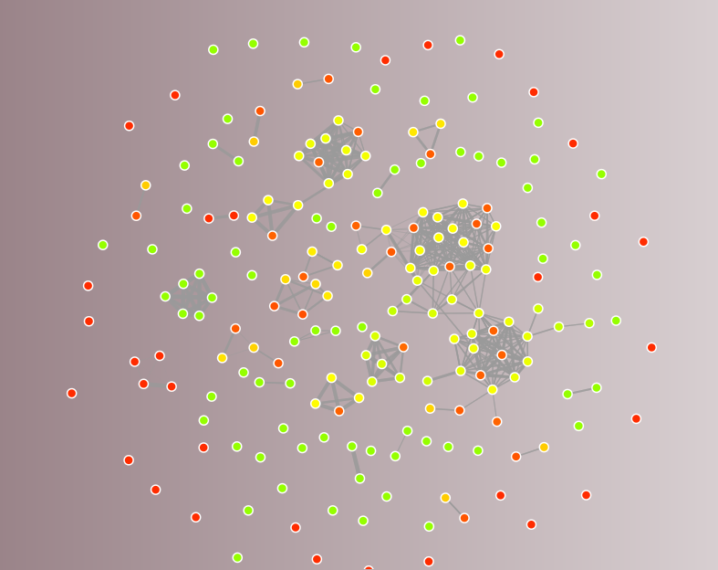

My team calculated if a financial advisor was negatively influenced by their friends. Specfically, we displayed financial advisors as nodes on a graph with edges between nodes repesenting a professional connection. Using our graphing program and public data, we would predict if a financial advisor was more likely to be an inside trader based on their professional connections.